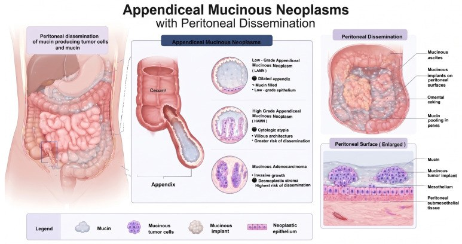
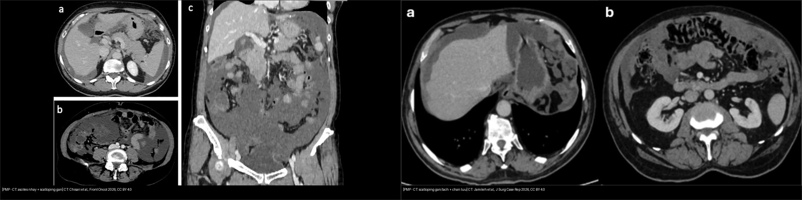
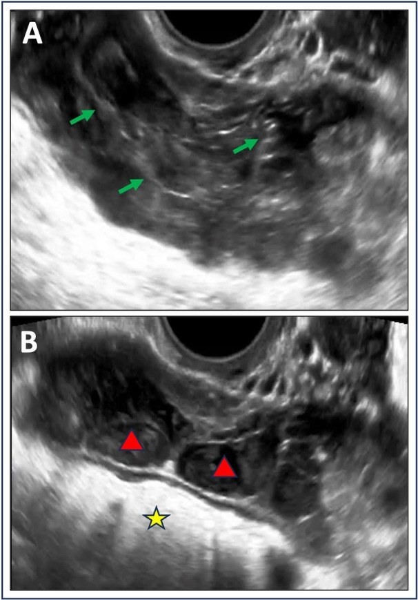
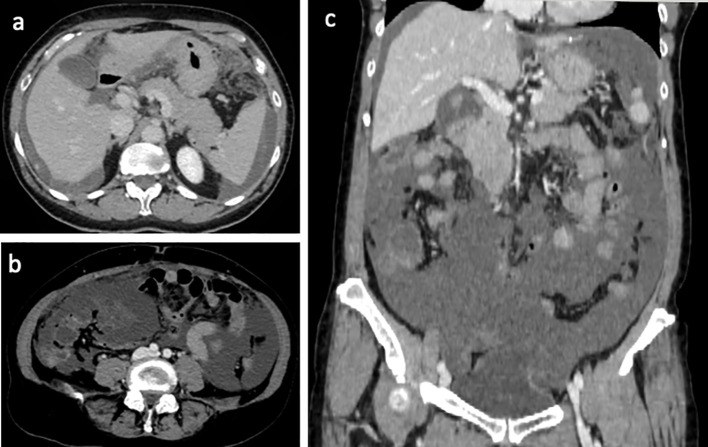
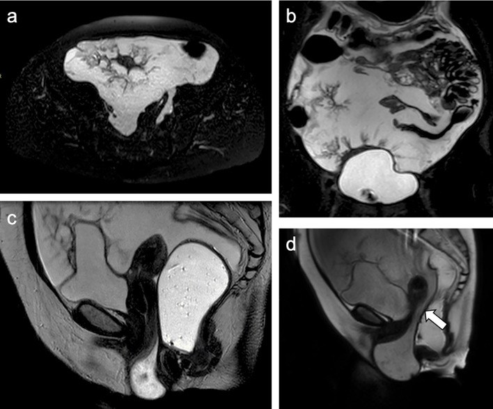
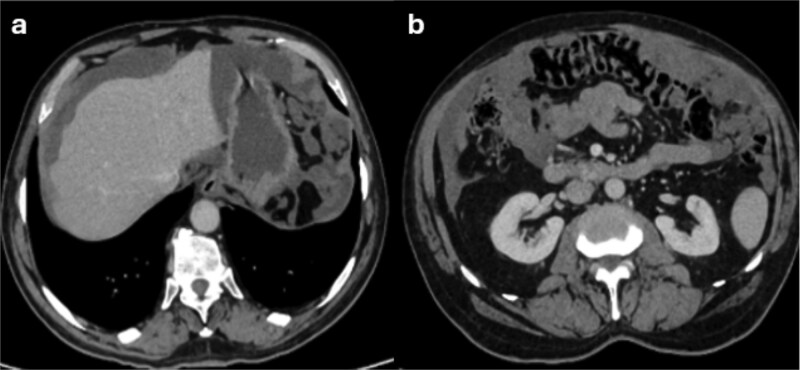
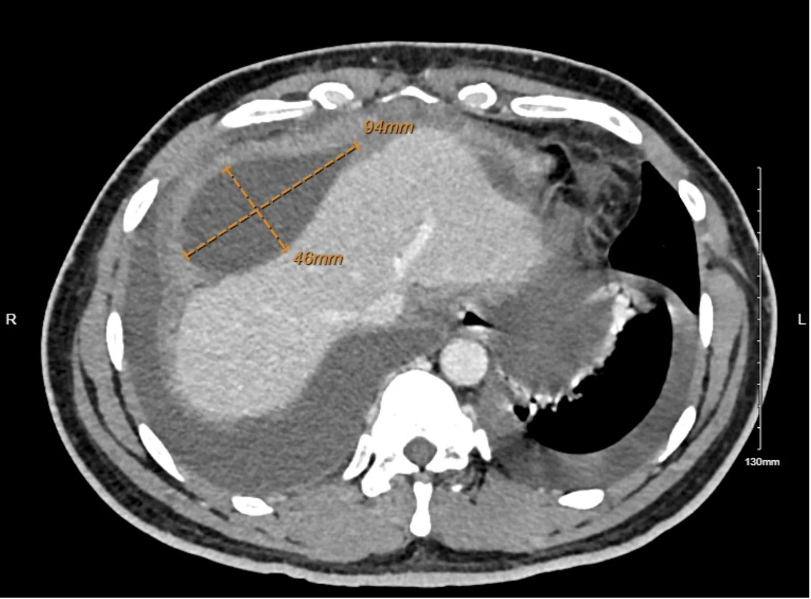

539 — Pseudomyxoma peritonei: dịch nhầy phúc mạc & dấu "khía" gan–lách / Pseudomyxoma peritonei
Tags: pattern:phuc-mac pattern:tien-ung-thu-nhay pattern:scalloping vung:phuc-mac score:PCI protocol:CT-bung-co-can-quang protocol:MRI-bung-chau
Mức chắc chắn (certainty): tổng hợp y văn (literature synthesis) — nhóm tự biên từ y văn mở (Europe PMC/PMC: Cancers, Front Oncol, J Surg Case Rep, Cureus, World J Surg Oncol) + các ca minh họa có giấy phép; không phải ca nguyên văn đơn lẻ.
1. Tổng quan — "keo dán ổ bụng": u nhầy ruột thừa vỡ, nhầy lan theo dòng dịch phúc mạc + cơ chế hình ảnh
- Định nghĩa: pseudomyxoma peritonei (PMP) là hội chứng lâm sàng–bệnh học gồm cụm cấy (implants) biểu mô nhầy + tích tụ dịch nhầy (mucin) tiến triển trong ổ bụng — KHÔNG phải một "khối u" đơn độc. Nguồn gốc áp đảo: u nhầy ruột thừa (appendiceal mucinous neoplasm); hiếm khi từ buồng trứng, đại tràng, túi mật, niệu quản, teratoma.
- Nguồn gốc & phân loại hiện hành (WHO/PSOGI 2016): tiền thân chính là LAMN (low-grade appendiceal mucinous neoplasm) → HAMN (high-grade) → ung thư biểu mô nhầy; buồng trứng nhầy-hợp chảy (goblet cell) xếp riêng. Phân độ dịch phúc mạc: mucin vô bào (acellular mucin), độ thấp (low-grade), độ cao (high-grade) — (khái niệm cũ Ronnett: DPAM vs PMCA). LAMN vỡ gây 2 hệ quả: nhầy vô bào tiên lượng rất tốt (không có biểu mô sống); nhầy có tế bào mới tạo PMP tái phát.
- Dịch tễ & tiên lượng (định lượng): tỉ lệ ~1/1.000.000/năm (đang tăng do nhận biết + tần suất u nhầy ruột thừa); ung thư ruột thừa tăng ~54% giai đoạn 2000–2009. Không điều trị: sống 5 năm ~15,3–67%, 10 năm ~8,3–31% (phẫu thuật giảm khối cũ). CRS + HIPEC (Chua, n = 2298): sống 10 năm 63%, 15 năm 59%; DFS 8,2 năm, OS 16,3 năm.
- Cơ chế lan (TẠI SAO hình ảnh như vậy):
- Lan theo "dòng dịch phúc mạc" chứ không theo máu/bạch huyết: nhầy chảy theo trọng lực → ưu thế vùng thấp: chậu hông, rãnh cạnh đại tràng (paracolic gutters), dưới hoành, mạc nối (omentum) → đúng vị trí ta thấy cấy/implant trên CT.
- Dấu "khía" (scalloping): nhầy ép mặt ngoài cơ quan (đặc biệt gan và lách) tạo khía lõm vào bề mặt — vì KHÔNG xâm lấn phá hủy (khác cấy carcinomatosis thanh dịch vốn xâm lấn). Đây là dấu hiệu "chốt vào" kinh điển.
- Đậm độ dịch nhầy: mucin là glycoprotein (MUC2) giàu nước → trên MRI T2 rất sáng, T1 tối; trên CT thường ~10–20 HU (protein làm nhỉnh hơn dịch đơn thuần ~0–10 HU, nhưng vẫn "gần nước" nên có thể bỏ sót). Vì giàu nước nên thường không khuếch tán hạn chế khi nhầy vô bào (ADC cao; coi chừng T2 shine-through), nhưng nhầy giàu tế bào có thể DWI sáng/ADC thấp.
- Bụng đầy "keo" đẩy ruột ra sau/giữa : ruột bị dồn trung tâm và cố định bởi nhầy thay vì nổi lên trên như báng nước tự do → dấu "centrally displaced fixed bowel" trên siêu âm.
- Vì sao quan trọng: gọi "báng tự do" ở bệnh nhân bụng to → bỏ sót PMP (và bỏ lỡ CRS + HIPEC — can thiệp duy nhất cải thiện sống còn). Ngược lại gọi nhầm lao phúc mạc/cấy dày phúc mạc lành là PMP → phẫu thuật/điều trị quá mức.

*Sơ đồ: ruột thừa bị u nhầy thay niêm mạc (LAMN/HAMN/ung thư biểu mô nhầy) → vỡ → lan phúc mạc: dịch nhầy, cấy trên bề mặt phúc mạc, đóng bánh mạc nối (omental caking), nhầy giữa các quai ruột ở chậu. Nguồn: Giordano W et al., Cancers 2026 Fig. 2, CC BY 4.0.*2. Mẫu hình + chẩn đoán phân biệt theo khu trú (Gamut)
- Khuôn 1 — "Khía" mặt gan–lách (scalloping): các khối dịch nhầy tựa vào và hằn lõm bề mặt gan/lách, tạo rìa đa cung — dấu gợi ý nhất của PMP.
- Khuôn 2 — Đóng bánh mạc nối (omental caking): mạc nối dày, thâm nhiễm nhầy thành "bánh" ở vùng thượng vị/dưới thành bụng trước.
- Khuôn 3 — Dịch nhiều ngăn/tạo vách "curvilinear": nhầy thường khu trú, có vách mảnh, không theo trọng lực đơn thuần (khác báng tự do một khối).
- Khuôn 4 — Ruột dồn trung tâm & cố định (siêu âm): dịch tăng echo lấm tấm, có vách; ruột bị đẩy vào giữa và dính cứng, không trôi tự do.
- Khuôn 5 — Cấy dạng nốt/đám trên phúc mạc & dưới hoành: có thể vôi hóa (nhất là sau điều trị / nhầy cũ).
- Vị trí ưu thế (theo dòng dịch): chậu hông > rãnh cạnh đại tràng > dưới hoành > mạc nối; KHÔNG ưu thế nhu mô gan/lách (phân biệt di căn tạng đặc).
- Mimic cần loại: ung thư biểu mô thanh dịch phúc mạc (serous carcinomatosis) — cấy xâm lấn + nốt đặc, không "khía" mặt tạng (
535); lao phúc mạc — dịch + dày mạc nối + hạch hoại tử, bối cảnh sốt/gầy; u trung biểu mô phúc mạc đa nang (multicystic peritoneal mesothelioma); báng tự do (xơ gan, suy tim); u nhầy buồng trứng vỡ (thực ra phần lớn "PMP từ buồng trứng" là do ruột thừa — phải soi ruột thừa).
3. Bảng so sánh phân biệt (ma trận đối chiếu)
| Thực thể (entity) | Hình ảnh điển hình (CT/MRI/US) | Chốt vào (rule-in) | Chốt loại (rule-out) | Gợi ý xác nhận |
|---|---|---|---|---|
| PMP độ thấp (LAMN/low-grade) | Dịch nhầy "khía" mặt gan–lách + đóng bánh mạc nối + nhầy ít vách; không nốt xâm lấn tạng | Scalloping gan–lách + cấy không xâm lấn + tiền sử u nhầy ruột thừa | Nốt đặc xâm lấn nhu mô gan → nghĩ carcinomatosis | Mô học (nhầy vô bào/độ thấp), CDX2+/CK20+, PCI, xét ruột thừa |
| PMP độ cao (HAMN/high-grade) | Tương tự nhưng cấy đặc hơn, nhiều nốt, tăng lan, đôi khi hoại tử; tiến triển nhanh | Cấy đặc + tăng nhanh + mô học độ cao | Thành phần chủ yếu dịch nhầy "trơ" → nghĩ độ thấp | Mô học (Ki-67 cao); tế bào học dịch; tiên lượng xấu hơn |
Carcinomatosis thanh dịch (535) |
Nốt/đám đặc xâm lấn mặt gan–lách–phúc mạc, dày mạc nối dạng nốt, dịch thường không nhầy | Nốt xâm lấn + CA-125 rất cao + tổn thương buồng trứng | Rìa "khía" nhẵn, không nốt xâm lấn → nghĩ PMP | Mô học/IHC (PAX8, WT1, CA-125) |
| Lao phúc mạc | Dày phúc mạc + dịch + hạch hoại tử trung tâm, tăng ngấm; không "khía" | Bối cảnh sốt/gầy/suy giảm MD + hạch hoại tử + ADA dịch | Nhầy keo đặc trưng + tiền sử ruột thừa → nghĩ PMP | PCR/SO (Mycobacterium), tế bào học dịch |
| Báng tự do (xơ gan/suy tim) | Dịch theo trọng lực, mặt gan/lách nhẵn, ruột trôi tự do; dấu hiệu bệnh nền | Bệnh nền xơ gan/suy tim + mặt tạng nhẵn | Có "khía" rìa tạng + vách + ruột dính → nghĩ PMP | SA tim/đánh giá gan; phân tích dịch |
| U trung biểu mô phúc mạc đa nang | Nhiều nang dịch vách mỏng trong phúc mạc, thường ở phụ nữ | Nhiều nang con, không "khía"/không nhầy keo | Nhầy keo nhiều + u nhầy ruột thừa → PMP | Mô học/IHC (calretinin, WT1); calcitriol |

Trái: CT ("khía" mặt gan + dịch nhầy khu trú, dồn ruột). Phải: CT cấy nhầy gây "khía" gan–lách và chèn ép (PMP độ cao, tắc môn vị). Nguồn: Chisari LM et al., Front Oncol 2026 & Jamileh E et al., J Surg Case Rep 2026, CC BY 4.0 (ảnh ghép letterbox).4. Protocol chụp + CRS/HIPEC + điểm PCI/CC
- CT bụng–chậu có cản quang (3 thì: chưa tiêm + ĐM + tĩnh mạch cửa): là kênh chuẩn để (1) xác nhận nhầy, (2) bản đồ hóa cấy theo 13 vùng PCI, (3) tìm tổn thương ruột thừa nguyên phát. Đo đậm độ dịch (nhầy thường ~10–20 HU; có thể gần nước).
- MRI bụng–chậu (khi cần đánh giá phúc mạc nhỏ/chậu hông, phụ nữ): T2 rất sáng (nhầy giàu nước) + T1 tối + DWI/ADC; nhầy vô bào thường ADC cao (cẩn thận T2 shine-through), nhầy giàu tế bào có thể hạn chế.
- Siêu âm: dịch tăng echo lấm tấm + vách, ruột dồn trung tâm và cố định → gợi ý mạnh nhầy keo (khác báng trong).
- Điểm:
- PCI (Peritoneal Cancer Index): chia ổ bụng 13 vùng, mỗi vùng 0–3 (tổng 0–39); dùng để chọn bệnh nhân mổ và tiên lượng (
535). - CC score (Completeness of Cytoreduction): CC-0 (không còn tổn thương thấy được) → CC-1 (< 2,5 mm)** → **CC-2 (2,5 mm–2,5 cm)** → **CC-3 (> 2,5 cm) — CC-0/1 mới đạt lợi ích sống còn tối đa.
- PCI (Peritoneal Cancer Index): chia ổ bụng 13 vùng, mỗi vùng 0–3 (tổng 0–39); dùng để chọn bệnh nhân mổ và tiên lượng (
- Điều trị: CRS (phẫu thuật giảm khối) + HIPEC (hóa trị trong ổ bụng có gia nhiệt) là chuẩn; mổ giảm khối đơn thuần lợi ích kém. Pipac là kỹ thuật bổ trợ ở bệnh cảnh không mổ triệt để.
- Bắt buộc tìm nguồn: kiểm tra/ cắt ruột thừa và mô bệnh học — đừng "chốt" PMP do buồng trứng khi chưa loại ruột thừa.
flowchart TD
A[Bụng to / dịch phúc mạc bất thường] --> B{CT: dịch nhầy có KHÍA mặt gan-lách?}
B -->|Không: mặt tạng nhẵn, dịch theo trọng lực| Z[Báng tự do: tìm xơ gan/suy tim]
B -->|Có| C{Cấy ĐẶC xâm lấn + CA-125 cao?}
C -->|Có| D[Nghi carcinomatosis thanh dịch - 535]
C -->|Không| E{Có u nhầy/tổn thương RUỘT THỪA?}
E -->|Có| F[PMP: lấy mô học + tế bào học dịch]
E -->|Không| G[Cân nhắc lao phúc mạc / u trung biểu mô đa nang]
F --> H{Mô học: nhầy vô bào / độ thấp / độ cao?}
H -->|Vô bào| I[Tiên lượng rất tốt: theo dõi]
H -->|Độ thấp hoặc độ cao| J[Bản đồ PCI tren CT/MRI]
J --> K{PCI/mổ được - toàn trạng cho phép?}
K -->|Có| L[CRS + HIPEC, mục tiêu CC-0/1]
K -->|Không| M[PIPAC / giảm khối tạm thời / chăm sóc giảm nhẹ]
5. Biến thể bình thường và cạm bẫy
- Cạm bẫy "báng tự do vs dịch nhầy": cùng "gần nước" trên CT → dễ đọc là báng. Chốt bằng "khía" mặt gan–lách + vách/khu trú + ruột dồn trung tâm và tiền sử u nhầy ruột thừa.
- Cạm bẫy MRI "unremarkable": PMP có thể âm tính giả trên MRI ban đầu (ca Awada: MRI bụng "không đặc hiệu", sau CT mới lộ dịch khu trú + khối lớn) → không loại trừ PMP chỉ bằng một lần MRI.
- Cạm bẫy "dịch đục do nhiễm khuẩn": ca PMP ruột thừa có thể bị che lấp bởi dịch mủ cấy dương tính (culture-positive neutrocytic ascites) → đừng dừng ở "viêm phúc mạc nhiễm khuẩn"; nếu dịch đặc/keo + bệnh cảnh kéo dài, nghĩ PMP.
- Cạm bẫy nguồn gốc buồng trứng: nhiều ca "PMP do u nhầy buồng trứng" thực ra nguồn là ruột thừa → luôn kiểm tra ruột thừa + IHC (CDX2, CK20, SATB2) để xác định gốc.
- Cạm bẫy DWI: nhầy vô bào (nhiều nước) → T2 shine-through giả "khuếch tán hạn chế"; đọc ADC map trước khi kết luận độ ác.
- Cạm bẫy biến chứng cơ học: PMP có thể biểu hiện tắc môn vị do chèn ép (không u nội tại), thoát vị rốn, tắc niệu quản/ứ nước thận — đừng chỉ tìm trong phúc mạc mà bỏ biến chứng.
- Cạm bẫy khối to ↔ bệnh nhân "khỏe": PMP tiến triển âm thầm nhiều tháng → khối lượng bệnh lớn trên hình ảnh không tương xứng triệu chứng; đọc hình ảnh là chìa khóa.
6. Tự lượng giá — Blind Quiz
Ca 1 — Nữ, bụng to, dịch ổ bụng "lấm tấm". Đọc siêu âm.

- Hỏi: dịch "tăng echo + vách + ruột dồn giữa" khác gì báng tự do đơn thuần? Nghĩ đến gì?
Bấm để hiện đáp án (findings + chẩn đoán)
- Dấu hiệu (findings): dịch tăng echo (echogenic ascites) lấm tấm, có vách mảnh (mũi tên xanh/tam giác đỏ); ruột bị dồn ra trung tâm và cố định (dấu sao vàng).
- Chẩn đoán (diagnosis): pseudomyxoma peritonei — nhầy keo giàu protein tạo echo/vách và dồn ruột, khác báng nước trong (trong, không vách, ruột trôi tự do).
- Nguồn ảnh: Yoeli-Bik R et al., J Ultrasound Med 2025 Fig. 3, CC BY 4.0.
Ca 2 — CT bụng: dịch và rìa gan. Đọc CT.

- Hỏi: mô tả rìa gan/lách. Vì sao gọi là "scalloping"?
Bấm để hiện đáp án (findings + chẩn đoán)
- Dấu hiệu (findings): lượng lớn dịch nhầy tăng đậm nhẹ, "khía" (scalloping) mặt gan–lách, nốt/đám cấy trên phúc mạc; khối lớn trong ổ bụng chèn ép, ruột bị đẩy ra sau.
- Chẩn đoán (diagnosis): pseudomyxoma peritonei (PMP) — nhầy ép mặt tạng tạo khía (không xâm lấn), khác cấy thanh dịch xâm lấn.
- Nguồn ảnh: Chisari LM et al., Front Oncol 2026 Fig. 2, CC BY 4.0.
Ca 3 — MRI T2 chậu: dịch rất sáng + nốt phúc mạc. Đọc MRI.

- Hỏi: vì sao dịch nhầy rất sáng trên T2? Điều gì giải thích các "nốt" bám phúc mạc?
Bấm để hiện đáp án (findings + chẩn đoán)
- Dấu hiệu (findings): T2W axial/coronal: dịch nhầy cường tín hiệu rất mạnh (hyperintense) lan rộng, có nốt phúc mạc (peritoneal nodules); nhầy cũng tụ ở túi cùng trực tràng–tử cung, đẩy cấu trúc.
- Chẩn đoán (diagnosis): PMP — mucin giàu nước (glycoprotein) nên T2 rất sáng/T1 tối; các nốt = cấy biểu mô nhầy trên phúc mạc.
- Nguồn ảnh: Chisari LM et al., Front Oncol 2026 Fig. 1, CC BY 4.0.
Ca 4 — Ưu thế: CT cho thấy cấy nhầy gây chèn ép môn vị. Đọc CT.

- Hỏi: vì sao bệnh nhân nôn nhiều dù không có "u trong dạ dày"? Dấu hiệu nào trên CT?
Bấm để hiện đáp án (findings + chẩn đoán)
- Dấu hiệu (findings): dịch nhầy giảm đậm gây "khía" gan và lách, dày mạc nối/cấy, và chèn ép ngoài môn vị–tá tràng (không có u lòng ống).
- Chẩn đoán (diagnosis): PMP độ cao gây tắc môn vị do chèn ép ngoài — biến chứng cơ học của nhầy; xử trí gồm CRS/HIPEC hoặc giải pháp tạm thời (stent/nối vị tràng).
- Nguồn ảnh: Jamileh E et al., J Surg Case Rep 2026 Fig. 1–2, CC BY 4.0.
Ca 5 — CT: dịch khu trú cạnh gan. Đọc CT.

- Hỏi: "loculated" (khu trú, nhiều vỏ) khác "free" (tự do) thế nào? Gợi ý chẩn đoán?
Bấm để hiện đáp án (findings + chẩn đoán)
- Dấu hiệu (findings): khối dịch khu trú cạnh gan ~94 × 46 mm (đo trên CT), có vỏ/vách, không theo trọng lực đơn thuần; kèm dịch khu trú nhiều nơi.
- Chẩn đoán (diagnosis): pseudomyxoma peritonei — nhầy thường khu trú, nhiều vỏ/vách (khác báng tự do); ca này MRI ban đầu "không đặc hiệu" nên đừng loại trừ sớm.
- Nguồn ảnh: Awada H et al., Cureus 2026 Fig. 1, CC BY 4.0.
Ca 6 — Sơ đồ: cơ chế hình thành PMP từ ruột thừa. (Xem sơ đồ ở mục 1 — dùng để tự kiểm tra: LAMN → vỡ → dịch nhầy + cấy + đóng bánh mạc nối.)
- Nguồn: Giordano W et al., Cancers 2026 Fig. 2, CC BY 4.0.
Ca 7 — Ảnh ghép: bên trái vs bên phải, điểm chung là gì? Đọc ảnh ghép CT.
- Hỏi: hai ca khác biệt (PMP "kinh điển" vs PMP gây tắc môn vị) nhưng cùng một dấu hiệu quyết định — dấu hiệu nào?
Bấm để hiện đáp án (findings + chẩn đoán)
- Cả hai đều có "khía" (scalloping) mặt gan/lách do dịch nhầy ép — dấu hiệu "chốt vào" của PMP, cùng cơ chế: nhầy lan theo dòng dịch phúc mạc, không xâm lấn.
- Trái: PMP kinh điển (dịch nhầy + cấy). Phải: PMP độ cao gây chèn ép môn vị (tắc môn vị do chèn ép ngoài).
- Nguồn: Chisari LM et al., Front Oncol 2026 & Jamileh E et al., J Surg Case Rep 2026, CC BY 4.0 (ảnh ghép letterbox).
Bài liên quan chéo
- 500 – Tổng quan Vú & Sản phụ khoa
- 535 – Ung thư buồng trứng, phúc mạc & u Krukenberg
- 537 – U buồng trứng giáp biên (borderline)
- 141 – Phúc mạc
- 165 – Dày thành ruột: Crohn vs K đại-trực tràng
- 162 – Tắc ruột
Ảnh
539_pseudomyxoma_US_PMC12240477.jpg,539_scalloping_CT_PMC13193853.jpg,539_mucin_MRI_PMC13193853.jpg,539_scalloping-obstruction_CT_PMC13308960.jpg,539_LAMN-pathogenesis_DIAGRAM_PMC13297372.jpg,539_loculated-ascites_CT_PMC13500083.jpg,composite_scalloping-CT.jpg. Nguồn + giấy phép từng ảnh trongimages/CREDITS.md.
Không dùng để chẩn đoán độc lập khi chưa có người hướng dẫn.